AgriRover
Precision Agriculture
An AI-powered autonomous rover for intelligent weed & pest detection with optimized targeted treatment — reducing herbicide use and protecting crops.
ESP32-CAM (Vision & Comms)
Native Bengali Support
About the Project
Why Precision Agriculture?
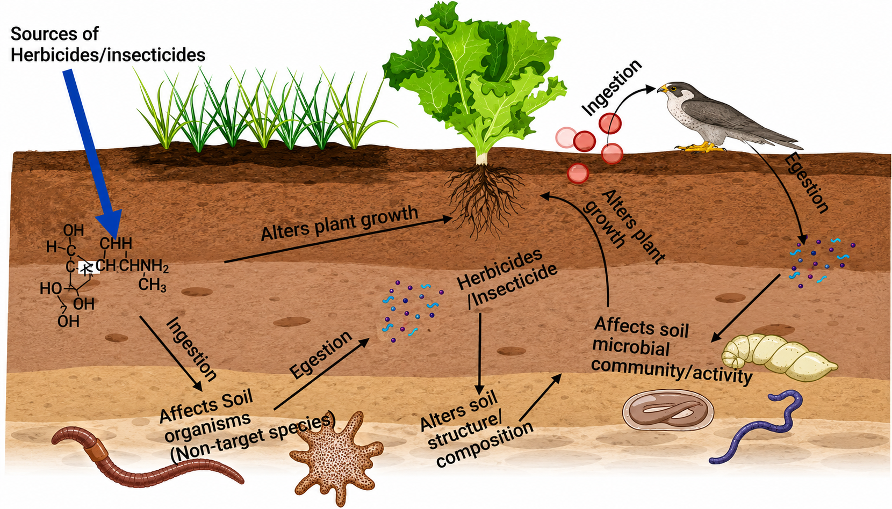
Disruption of Food Webs
Pesticides rarely affect only the target species. Blanket spraying declines beneficial insects, reduces food for birds and bats, and forces farms into a dependency cycle by eliminating natural pest predators.
- Loss of beneficial insects & wildflowers
- Reduces natural pest control, leading to pesticide resistance

Contaminating Ecosystems
After spraying, runoff carries residues into drains, ponds, rivers, and groundwater. This affects aquatic life and can trigger fish kills, while also contaminating human drinking water sources.
- Toxic to fish, amphibians, and aquatic insects
- Spreads from one field through an entire watershed
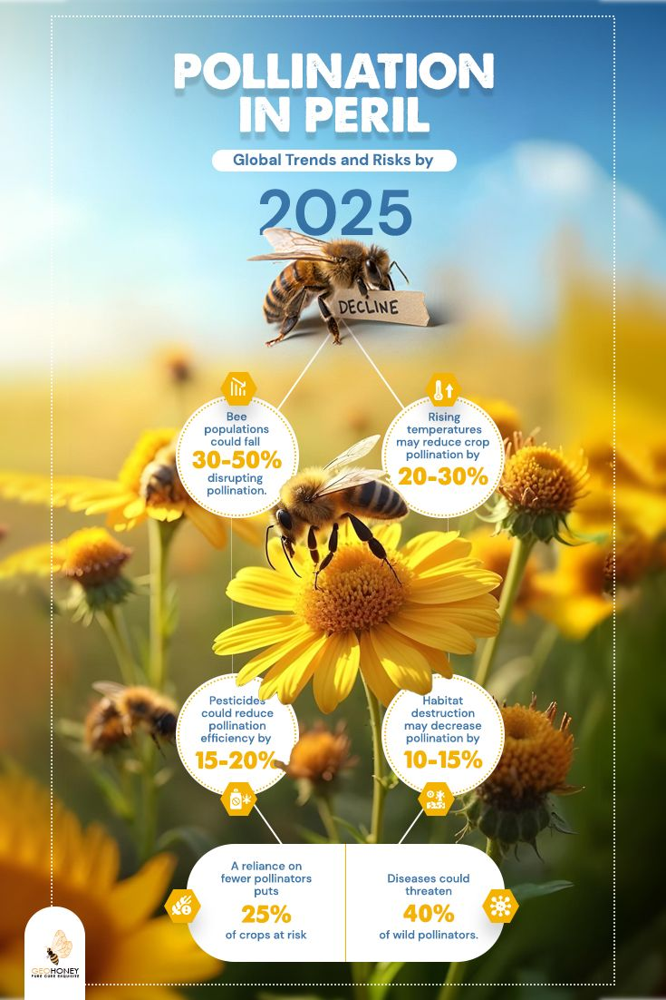
Threatening Global Food Security
Bees and butterflies contact pesticide residues on flowers, pollen, and nectar. This impairs their navigation, reduces reproduction, and directly threatens the large share of crops that depend on pollinators.
- Colony decline and greater disease susceptibility
- Drastic impact on fruit, vegetable, and seed production
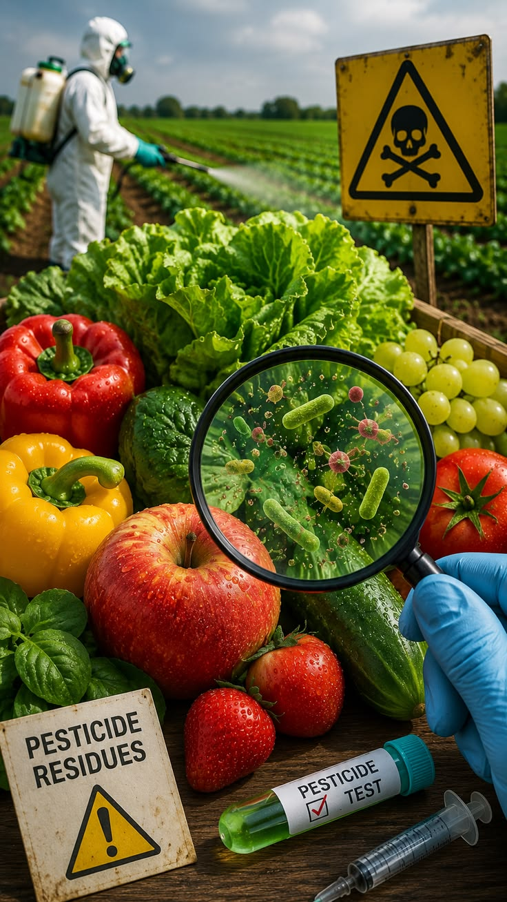
Entering the Food Chain
Spray residues remain on crops after harvest. Repeated ingestion over years increases risks of neurological disorders, endocrine disruption, and developmental effects.
- Residues frequently detected in food products
- Farm workers face high exposure during application
The AgriRover Solution
| Conventional Spraying | AgriRover Spot Spraying |
|---|---|
| Entire field sprayed (blanket coating) | Only detected weed/pest sprayed |
| High chemical waste (95-98% misses target) | Minimal chemical use, saving costs |
| Drift and runoff common | Greatly reduced drift and runoff |
| Harms soil organisms and pollinators | Protects most non-target organisms |
| Higher residues in environment and food | Lower residue burden for humans |
| Accelerates pesticide resistance | Reduces selection pressure |
Live Demo
The Rover
Key Goals
Vision & Goals
The mission, objectives, and measurable targets of AgriRover.
Methodology
System design, experimental setup, and approach.
Survey Data
Farmer survey results (n=80).
Results
Future Work
Weekly Updates
Bengali Language Support
Phase Overview
Native language support is crucial for farmers in Bangladesh. By incorporating Bengali language speaking capabilities, AgriRover becomes much more accessible. This allows farmers to interact naturally with the system, receive real-time explanations, and understand crop conditions without needing technical expertise or English proficiency.
Phase one focuses on the AI model's capability to have a natural conversation in the Bengali language. This foundational phase ensures the language models, translation, and text-to-speech engines can reliably process and generate Bengali speech.


In the second phase, the same conversational capabilities will be deployed directly via the rover. This enables on-field interaction where the rover can verbally report field anomalies, pest detections, and weather conditions back to the farmer in real-time.
Image Processing
Phase Overview
Computer vision is the core of AgriRover's precision agriculture capabilities. By utilizing deep learning models, the rover processes images from the field to detect pests (such as aphids), diseases, and weeds in real-time. This allows the system to make intelligent decisions for targeted treatment, minimizing chemical usage and protecting the crop ecosystem.
The first phase involves training and deploying our image processing model to accurately identify pests like aphids. The model analyzes visual data and places bounding boxes around detected bugs. This phase validates the model's accuracy and inference speed.
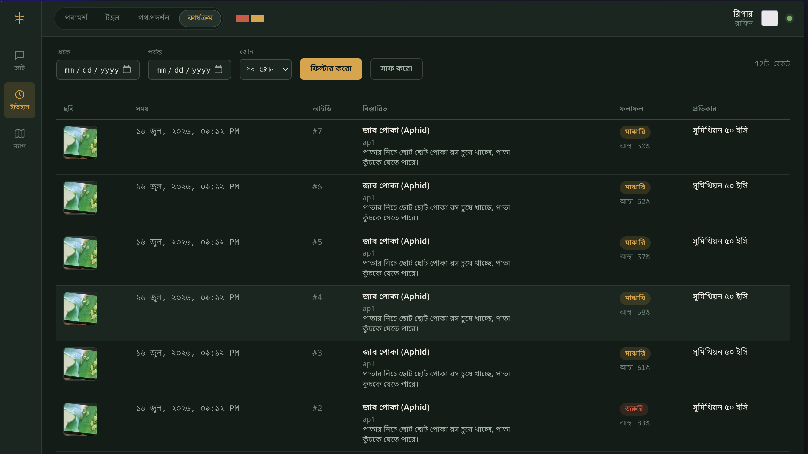
In the second phase, the detection data is paired with location coordinates to generate a comprehensive field map. This map visually indicates the exact spots where aphid infestations were detected, allowing for optimized route planning and targeted spot-spraying.
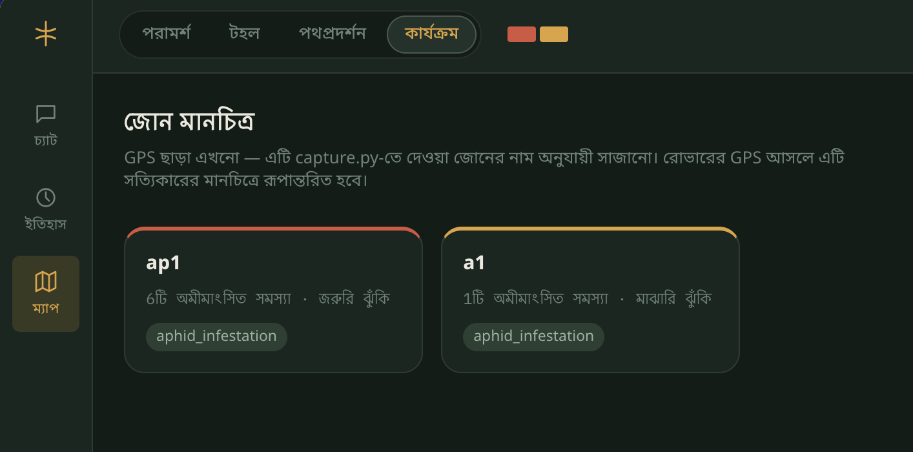
In the third phase, the trained vision models and mapping logic will be fully integrated with the rover's onboard hardware. This enables the rover to autonomously scan the field, perform real-time pest detection, and seamlessly execute spot-spraying or weeding without relying on external compute resources.
Research Questions
Core inquiries driving the AgriRover project.
Lightweight AI in Field Conditions 🌤️
How effectively can a lightweight deep learning architecture (e.g., YOLOv8n) accurately classify and detect crop anomalies under varying outdoor environmental factors like shifting sunlight, shadows, and wind?
Edge vs. Server Inference Trade-offs ⚡
What is the trade-off between inference speed and detection accuracy when processing the rover's captured images on a remote server versus an edge device?
Pest vs. Beneficial Distinction 🐞
To what accuracy can the system distinguish between beneficial insects/plants and actual pests/weeds common to the local agricultural context?
Microcontroller Latency & Wi-Fi 📡
How does the integration of low-cost microcontrollers (like the ESP32-S3) affect the latency of data transmission and real-time command execution under standard field Wi-Fi hotpots?
Actuation Efficiency: Blade vs. Spray ⚙️
What mechanical design configurations for the actuation modules (blade vs. spray nozzle) provide the highest efficiency in terms of energy consumption and targeted destruction of anomalies?
TSP Solver vs. Zigzag Coverage 🗺️
How much battery energy and operation time can be saved by implementing a Traveling Salesperson Problem (TSP) solver compared to a traditional raster/zigzag field coverage pattern?
Real-time Dynamic Obstacle Avoidance 🛑
How dynamically can the route planning algorithm adapt to real-time obstacle avoidance (using ultrasonic sensors) without disrupting the pre-generated field anomaly map?
Targeted Spot-Spraying Savings 💧
To what percentage can the deployment of a targeted spot-spraying mechanism reduce overall chemical/herbicide volume consumption compared to traditional blanket spraying methods?
Reduction in Chemical Exposure 🌿
What is the measurable reduction in unintended healthy crop chemical exposure when transitioning from manual mixed farming methods to AI-driven precision farming?
Socio-economic Constraints & Adoption 🧑🌾
How do socio-economic constraints, such as initial hardware costs and technical literacy among local farmers, impact the overall willingness and adoption rate of autonomous agricultural technologies?
Muntasir Rafin
Tahura Anzum
Maria Jahan Noon
Mobasshira Akter
Sumaiya Nasrin
Prototype
Physical build, chassis assembly, and hardware integration of the AgriRover.
Build Photos
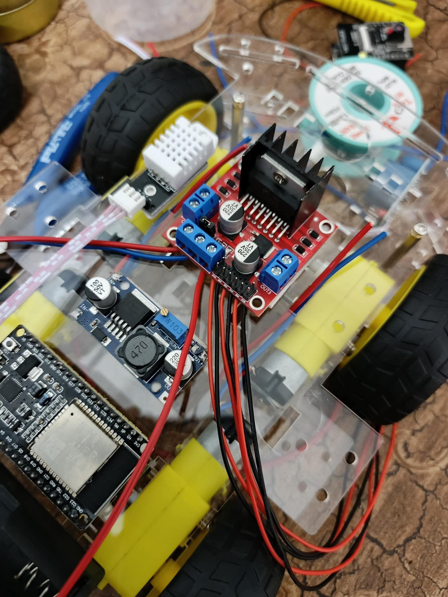
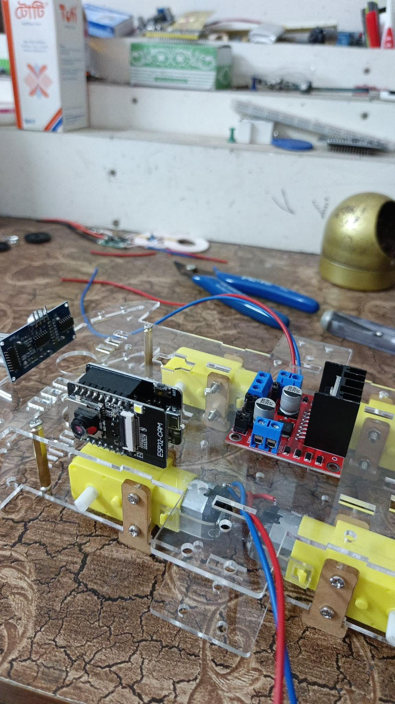
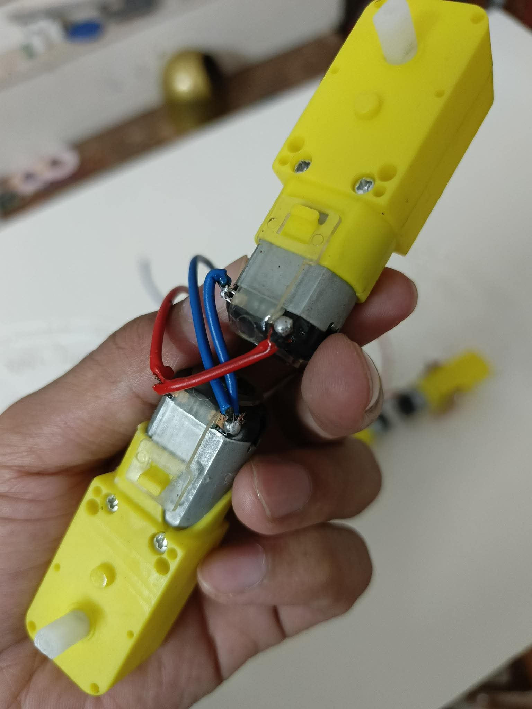

Build Progress
Software Overview
AI Model
YOLOv8 training, dataset, and detection pipeline.
Control Dashboard
A comprehensive, Bengali-first local web application for monitoring field health, managing rovers, and consulting with our AI agricultural advisor.
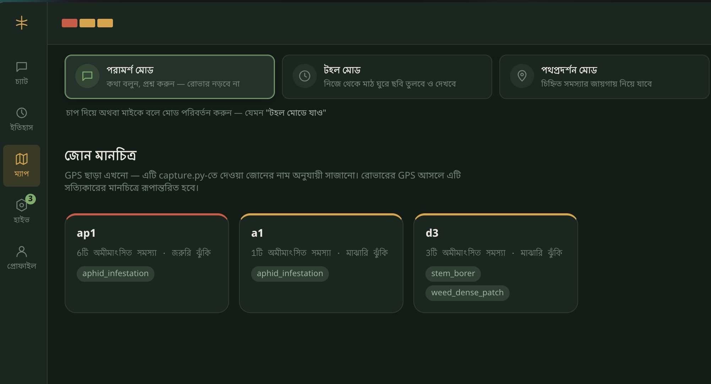
Field Health Visualization
Monitor the real-time health of different crop zones. The dashboard categorizes areas by severity (High, Medium, Low risk) based on the AI rover's latest field patrols.
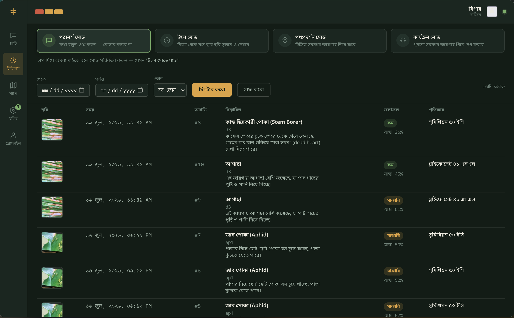
Track Anomalies & Reanalyze
Review past photos and AI predictions. The history tab allows farmers to filter by date and zone, view the exact disease detected, and manually trigger a re-analysis on past images if the model gets updated.
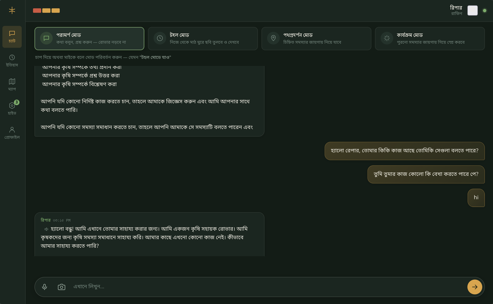
Intelligent Farm Advisor
A voice-enabled conversational AI built with Groq. Reaper speaks fluent Bengali, offering tailored agricultural advice, explaining detected crop diseases, and suggesting localized treatments.
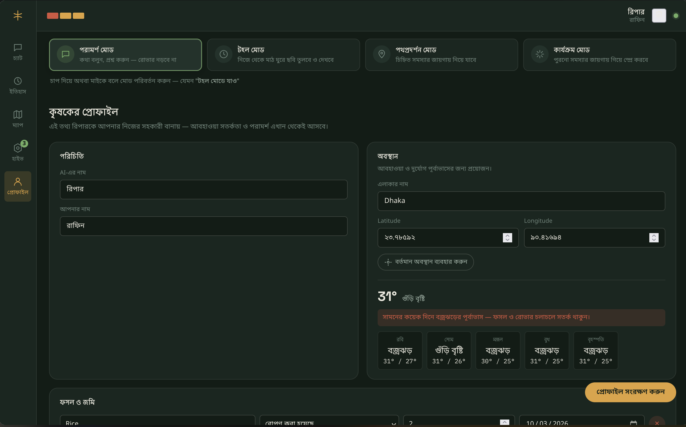
Weather & Risk Assessment
Integrates real-time weather forecasts directly into the dashboard. Reaper uses this data to alert the farmer about upcoming weather risks, like adjusting irrigation before heavy rainfall.
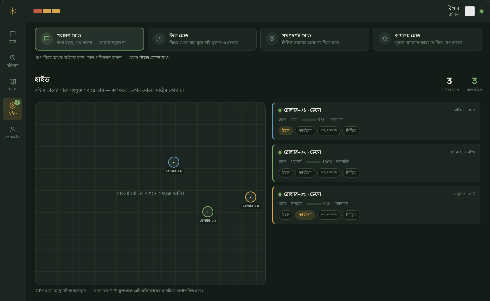
Hive Management
Centrally track all active AgriRover units in the field. View operational status, assign tasks, and monitor network connectivity for the entire fleet.
Sketch and Diagrams
Initial concepts, refined designs, and full system architecture.
Initial Concept Sketches
Early Sketch
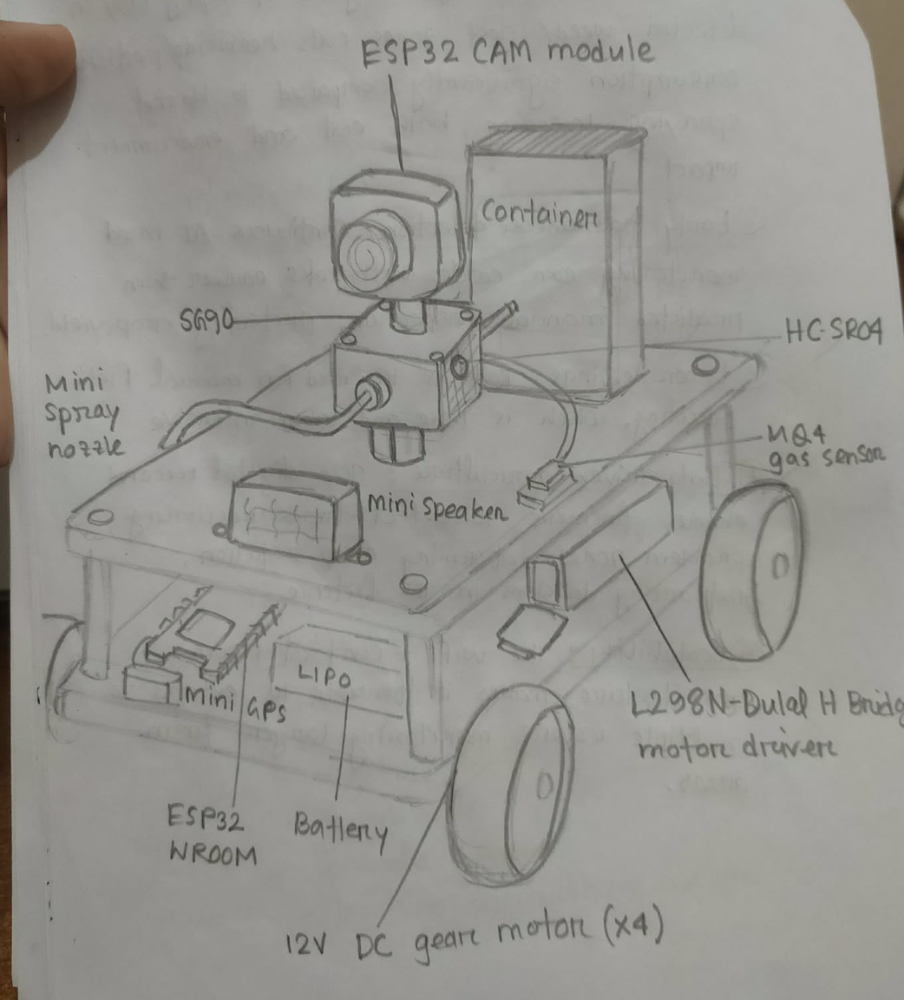
Refined Sketch
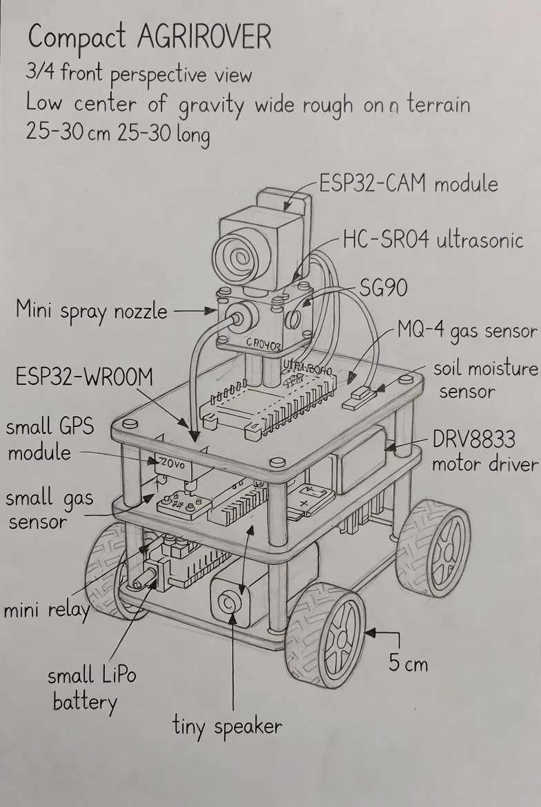
System Block Diagram
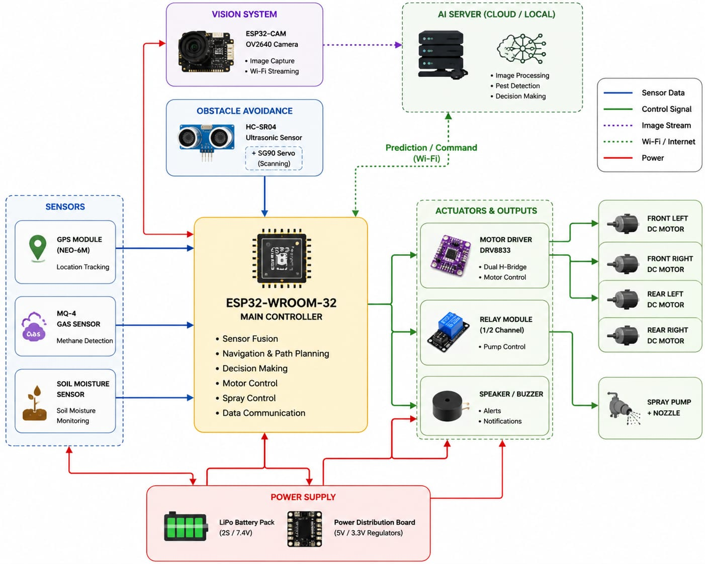
Architecture Explanation
The block diagram illustrates the complete architecture of your AgriRover, showing how data flows from the sensors to the controller, how AI assists in decision-making, and how the rover performs actions based on those decisions.
1. Vision System (ESP32-CAM)
The ESP32-CAM serves as the rover's visual perception unit. Its built-in OV2640 camera captures images of crops and the surrounding environment. Instead of processing images locally, it transmits them via Wi-Fi to the AI server, where computer vision algorithms analyze the images to detect pests, weeds, or plant diseases.
2. Obstacle Avoidance
An HC-SR04 ultrasonic sensor is mounted on an SG90 servo motor. The servo rotates the ultrasonic sensor to scan different directions, enabling the rover to detect obstacles before moving forward. Distance measurements are sent to the main controller to support safe navigation.
3. Environmental Sensors
Three sensors continuously monitor field conditions:
- GPS Module (NEO-6M): Provides real-time geographic coordinates, allowing the rover to record where data is collected and where pests are detected.
- MQ-4 Gas Sensor: Measures methane concentration, which may indicate decomposition, poor soil conditions, or livestock-related gases.
- Soil Moisture Sensor: Measures the water content of the soil, helping assess irrigation requirements.
4. Main Controller (ESP32-WROOM-32)
The ESP32-WROOM-32 acts as the brain of the rover. It integrates data from all sensors, receives AI predictions from the server, and controls the rover's movement and spraying operations.
Its primary responsibilities include:
- Collecting sensor data
- Processing navigation decisions
- Receiving AI detection results
- Controlling motors
- Activating the spray mechanism
- Managing communication between hardware and the AI server
5. AI Server
The AI server performs computationally intensive image analysis that cannot be efficiently executed on the ESP32.
Its tasks include:
- Image preprocessing
- Pest detection
- Weed detection
- Plant disease recognition (if implemented)
- Returning prediction results to the rover
6. Actuators and Outputs
Motor Driver (DRV8833)
The DRV8833 receives movement commands from the ESP32-WROOM-32 and drives the four DC motors, enabling: Forward movement, Reverse movement, Left turns, Right turns, and Speed control.
Relay Module
The relay functions as an electronic switch. When spraying is required, the ESP32 activates the relay, supplying power to the spray pump.
Speaker/Buzzer
The buzzer provides audible feedback, such as: Startup notification, Obstacle warnings, Pest detection alerts, Low battery warnings, and Task completion notifications.
7. Mobility System
The rover moves using four DC motors: Front-left motor, Front-right motor, Rear-left motor, and Rear-right motor. These motors provide traction for navigating agricultural fields.
8. Spray System
The spray pump and nozzle are responsible for dispensing pesticide or herbicide. They operate only when the relay is activated by the main controller following an AI-based decision.
9. Power Supply
A rechargeable LiPo battery powers the entire rover. Power is distributed to: ESP32-CAM, ESP32-WROOM-32, Sensors, Servo motor, Motor driver, Relay, Spray pump, and Speaker. A voltage regulator (if included) ensures that each component receives the correct operating voltage.
Overall Workflow
- The rover begins moving through the field.
- The ultrasonic sensor scans for obstacles while the environmental sensors continuously collect data.
- The ESP32-CAM captures crop images and sends them to the AI server over Wi-Fi.
- The AI server analyzes the images and returns predictions, such as pest identification.
- The ESP32-WROOM-32 combines AI predictions with sensor data and determines the appropriate action.
- If pests are detected, the relay activates the spray pump to apply pesticide.
- The motor driver controls the rover's movement while the GPS logs the location of operations.
- The buzzer provides audio notifications when necessary.
- This process repeats continuously until the field has been surveyed.
Overall, the architecture follows a clear separation of responsibilities: the ESP32-CAM handles vision, the AI server performs image analysis, and the ESP32-WROOM-32 coordinates sensing, navigation, and actuation, resulting in an efficient and scalable smart agricultural rover.
Lecture Timeline
A detailed record of course progress, workshops, and milestones.
Course Introduction & Group Formation
Basic course formatting, project group formation, initial project discussion, and overview of robotics project requirements.
Class Closed — Eid Vacation
No class was held due to Eid vacation. Project discussion continued informally among team members.
Basic Introduction to Robotics
Covered basic robotics ideas, robot types, autonomous systems, sensors, actuators, and how robotics connects to our Krishi Rover.
Presentation of Research Proposals
Each team presented their research proposal, including project goals, planned approach, and expected challenges. Feedback was provided to help refine the project direction.
Workshop on Ai Agent locally
we discussed about the Ai agent and how to use it locally for our project. We also discussed about the different types of Ai agents and their applications in robotics.
Workshop on Hardware components and we show our project progress
We discussed about the different hardware components used in our project and how to use them. We also showed our project progress and received feedback from the instructor.
Class on the Assignment and Midterm Exam Preparation
We discussed about the assignment and midterm exam preparation. We also discussed about the different types of questions that can be asked in the exam and how to prepare for them.
Class Closed Due to weather conditions
Mid term exam was postponed due to bad weather conditions. The mid exam Taken by 10th July 2026. The class was closed on 8th July 2026.
Mid Exam Conducted
Mid term exam was conducted on 10th July 2026. The exam was based on the topics covered in the previous classes. The students were given 1.3 hours to complete the exam.
Update Soon
Update Soon
Update Soon
Update Soon
Update Soon
Robotics
Members
The people behind AgriRover — Group 7, CSE 426, Summer 2026.